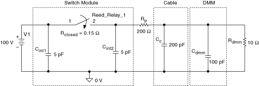

提交有关此主题的反馈。
提交有关此主题的反馈。 访问ni.com/support以获得技术支持。
访问ni.com/support以获得技术支持。下图说明了添加 200 pF 电容以模拟电缆电容的测试系统。此外，外部负载已被确定为高阻抗数字万用表的输入。甚至数字万用表的输入也存在很大的容性负载。添加用于将开关连接到负载的电缆会进一步增加此负载。总负载电容为 300 pF。

下表显示了无保护电路和保护电阻为 200 的电路的寿命测试结果。
| Rp ( ) _ | 寿命（周期） |
|---|---|
| 0 | 160,000 |
| 200 | 1,500,000 |
此示例显示，当使用保护性串联阻抗将开关与容性负载隔离时，使用寿命会增加近 10 比 1。
提交有关此主题的反馈。 访问ni.com/support以获得技术支持。